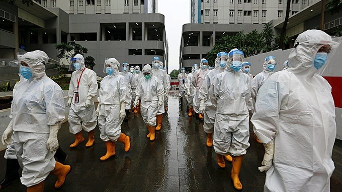

Model Diplomacy
Model Diplomacy

How the U.S. Patrols Its Borders
Backgrounder by Amelia Cheatham Claire Felter, April 12, 2021
April 12, 2021
Backgrounder by Amelia Cheatham Claire Felter, April 12, 2021


Book by Alice C. Hill
COVID-19 exposed the world’s failure to prepare for the worst—can we learn to build back better?
Washington realigns foreign troop deployments to match Indo-Pacific priority
There is no way you can pack everything in Luang Prabang in just 50 hours. The best-preserved city in Southeast Asia attracts travelers of all ages by it hill tribes, cooking class, fabulous night market, dense forests, dozens of gold temples, and the amazing Kuang Si waterfall. You would better to divide and choose the best things you want to conquer.
Alice Hill's new book reads like an informal briefing in the White House situation room on how to handle the climate crisis: Hill knows all the players, all the science, and all the politics. This is an excellent guidebook for any policymaker or citizen of planet Earth who wants to turn this crisis into opportunity and help build a better world.
Jeff Goodell, author of The Water Will Come
Alice Hill's new book reads like an informal briefing in the White House situation room on how to handle the climate crisis: Hill knows all the players, all the science, and all the politics. This is an excellent guidebook for any policymaker or citizen of planet Earth who wants to turn this crisis into opportunity and help build a better world.
Jeff Goodell, author of The Water Will Come
Here is a guide which I’ve ‘stolen’ from our best travel expert, Ms. Mai Phuong, for you to spend 3 days, 2 nights in Laos tour. She did make it on her recent trip to the city last month. You can use it for your next trip or design your own one with the help of Mai Phuong – EV Travel Expert.
 This is Mai Phuong. She is wearing a handmade ‘crown’. We will follow her 3-day, 2-night itinerariy in Luang Prabang.
Once you arrive in Luang Prabang, head to colonial style buildings Satri House, located in the heart of the city. If you are interested in superior crafted wood furniture, oversized balconies, spacious bathrooms, beautiful spa room, and fine dining overlooking the garden, you come to the right place. All the rooms and suites are a blend of Lao traditional architecture with colonial style. Here you can enjoy your private moments and watch the everyday life of local people from your balcony.
 Satri House is located in the heart of the city, has a colonial
style.
Satri House is located in the heart of the city, has a colonial
style.
Spend a half day with the elephants at Elephant Village Sanctuary & Resort. An English speaking guide will pick you up from your hotel to the Elephant Camp. If you have any doubt about riding an elephant for ethical reasons, you will change your mind when you see the elephant’s treatment here. They are genuinely well cared for and the guides are very knowledgeable, not only about their animals but their country in general.
When federal forces declared a cease-fire last month and Tigrayan fighters retook control of the regional capital, it did not signal an end to the crisis, but rather the start of an anxious new phase.

When federal forces declared a cease-fire last month and Tigrayan fighters retook control of the regional capital, it did not signal an end to the crisis, but rather the start of an anxious new phase.

When federal forces declared a cease-fire last month and Tigrayan fighters retook control of the regional capital, it did not signal an end to the crisis, but rather the start of an anxious new phase.

When federal forces declared a cease-fire last month and Tigrayan fighters retook control of the regional capital, it did not signal an end to the crisis, but rather the start of an anxious new phase.